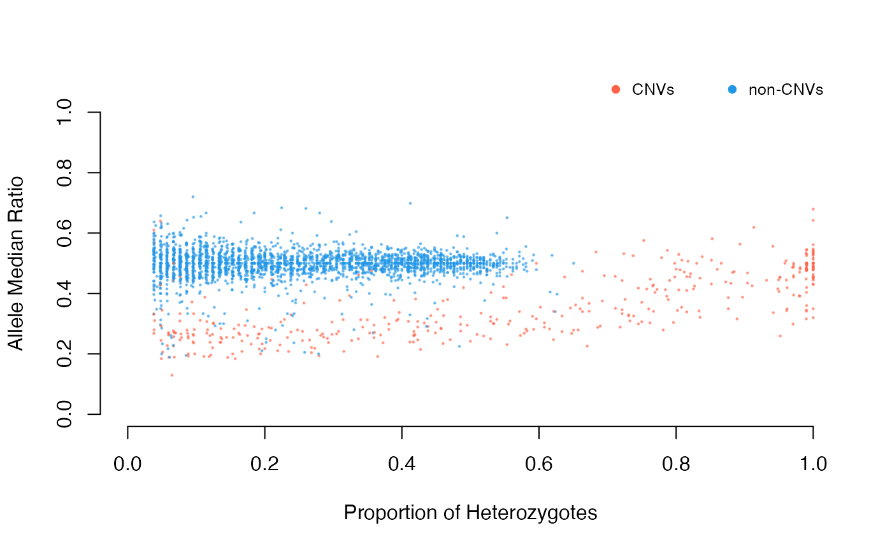

Categorize deviant and non-deviant into "singlets" and "duplicates" based on the statistical approaches specified by the user.
The intersection of all the stats provided will be used in the categorization. If one would like to use the intersection of at least two stats, this can be specified in the n.ints
Arguments
- data
A data frame of allele information generated with the function
allele.info- test
vector of characters. Type of test to be used for significance. See details
- filter
character. Type of filter to be used for filtering CNVs. default
kmeans. See details.- ft.threshold
confidence interval for filtering
default = 0.05- plot
logical. Plot the detection of duplicates. default
TRUE- verbose
logical. show progress
- ...
other arguments to be passed to
plot
Details
SNP deviants are detected with both excess of heterozygosity according to HWE and deviant SNPs where depth values fall outside of the normal distribution are detected using the following methods:
Z-score test \(Z_{x} = \sum_{i=1}^{n} Z_{i}\); \(Z_{i} = \frac{\left ( (N_{i}\times p)- N_{Ai} \right )}{\sqrt{N_{i}\times p(1-p)}}\)
chi-square test \(X_{x}^{2} = \sum_{i-1}^{n} X_{i}^{2}\); \(X_{i}^{2} = (\frac{(N_{i}\times p - N_{Ai})^2}{N_{i}\times p} + \frac{(N_{i}\times (1 - p)- (N_{i} - N_{Ai}))^2}{N_{i}\times (1-p)})\)
See references for more details on the methods
Users can pick among Z-score for heterozygotes (z.het, chi.het),
all allele combinations (z.all, chi.all) and the assumption of no
probe bias p=0.5 (z.05, chi.05)
filter will determine whether the intersection or kmeans
clustering of the provided tests should be used in filtering CNVs.
The intersection uses threshold values for filtering and kmeans use
unsupervised clustering. Kmeans clustering is recommended if one is uncertain
about the threshold values.
Examples
if (FALSE) data(alleleINF)
DD<-cnv(alleleINF)
#> categorizing putative duplicates with
#> excess of heterozygotes z.all & chi.all
